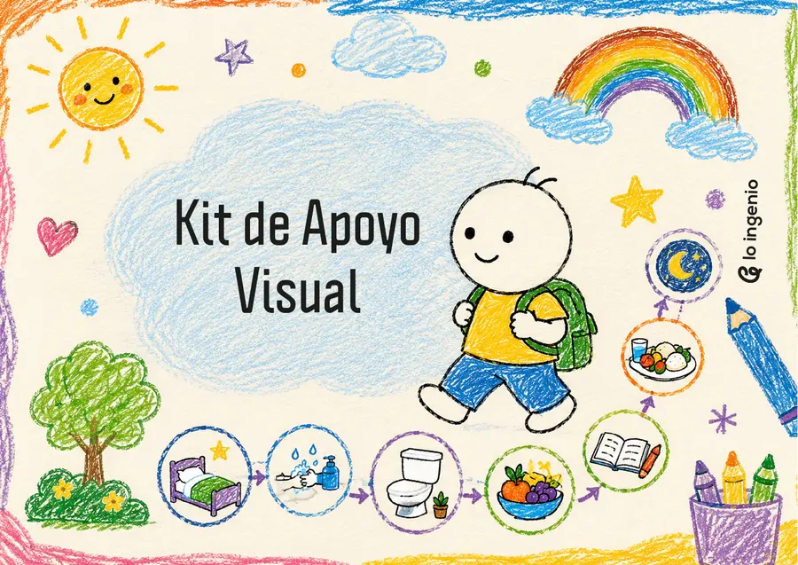

Descarga
Guarda el PDF en tu computador o teléfono.

Recurso gratuito · Lo Ingenio
Un tablero visual pensado para acompañar la rutina diaria de niños y niñas, favorecer su autonomía y ayudarles a anticipar cada actividad de forma clara y amigable.
Una ayuda sencilla para cada día
Guarda el PDF en tu computador o teléfono.
Imprime las piezas y déjalas visibles para el niño o niña.
Utiliza el tablero para anticipar y completar la rutina diaria.